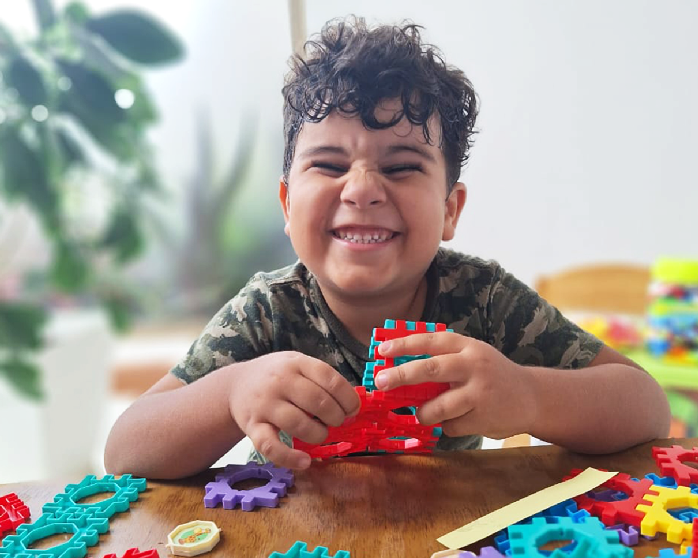
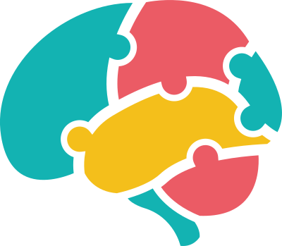
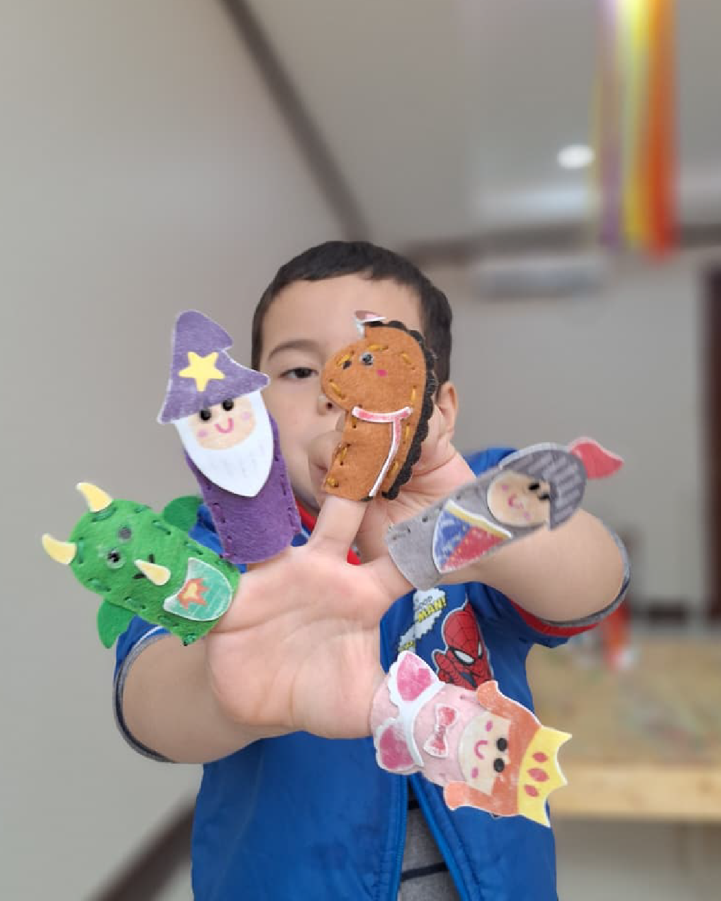

Atenciones Individualizadas
Las atenciones individualizadas son espacios de aproximadamente una hora, diseñados a partir de las necesidades particulares de cada niño o niña.


A diferencia de las experiencias grupales, este servicio permite realizar un acompañamiento mucho más personalizado, partiendo de una valoración de las necesidades, fortalezas, intereses y áreas que requieren mayor apoyo.
Dentro de estas atenciones podemos trabajar:
- Refuerzo y acompañamiento académico.
- Procesos iniciales de lectoescritura.
- Preparación y fortalecimiento de habilidades necesarias para el aprendizaje.
- Comprensión lectora y escritura.
- Desarrollo de habilidades cognitivas.
- Atención y seguimiento de dificultades específicas de aprendizaje.
- Acompañamiento en procesos relacionados con dislexia y otras necesidades educativas.
- Fortalecimiento de habilidades ejecutivas.
- Desarrollo de estrategias de aprendizaje.
- Acompañamiento individual en áreas que requieran refuerzo.

Cada proceso cuenta con planeamientos individualizados, de manera que las actividades y estrategias utilizadas respondan a las características particulares del niño o niña.
El propósito no es únicamente reforzar contenidos académicos, sino favorecer aprendizajes oportunos, significativos y acordes con las necesidades de cada estudiante, fortaleciendo también su confianza, autonomía y relación positiva con el aprendizaje.